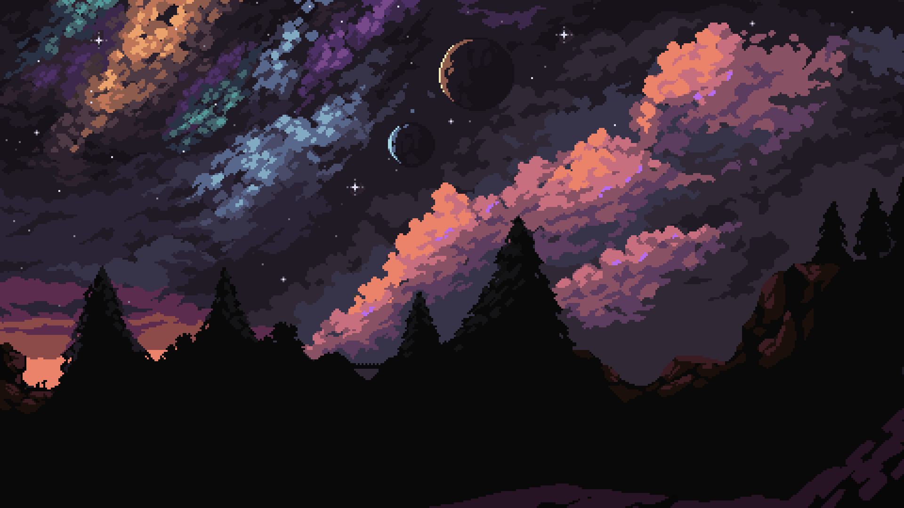

Fast food simulator. Gameplay is your day to day job at Big Grease working the graveyard shift. Your ultimate goal is to make rent for the week. Simulate the exciting life of a fast food employment and flexing your time management skills. how ever beware the supernatural events that occur during your monotonous job.
Itch.io Page

Wizards Day, a top down survival game that you need to survive for 5 rounds, collect experience points so that the fireball does more damage to the enemies.


A Server-Client Chat application that I made using the WinSock API and Multiplexing. Features communication from a client to a server with custom connectivity, usernames, and messages transfers.

Learn more about the projects that I have used the wxWidgets API for!
Features Conways Game of Life (Cellular Automata) and a Custom Calulator.